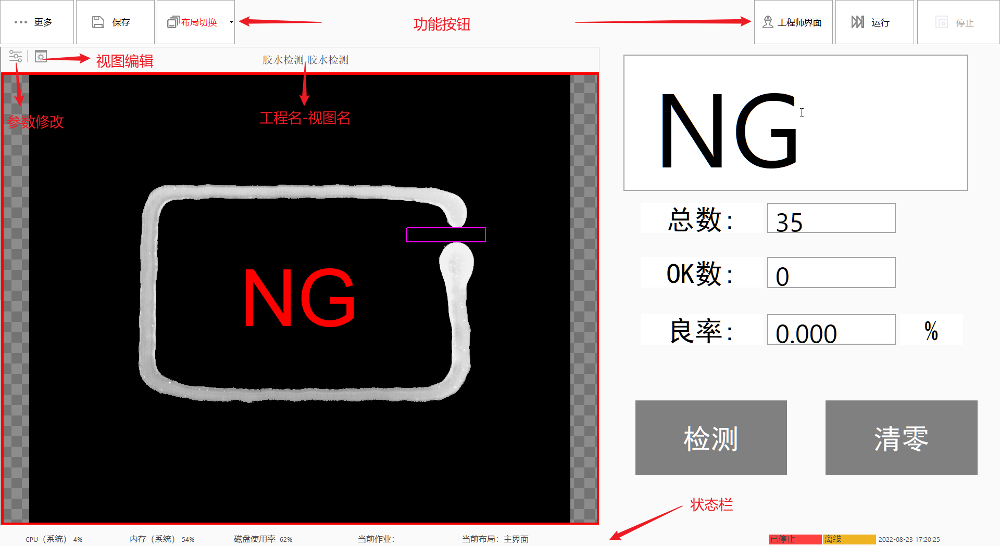
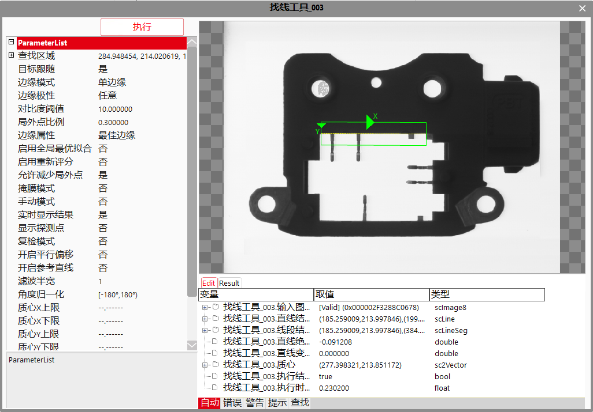
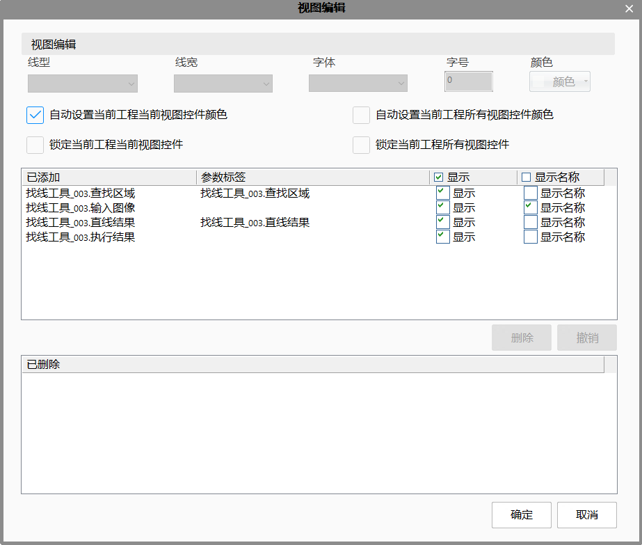
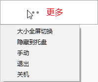
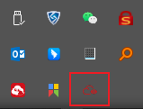
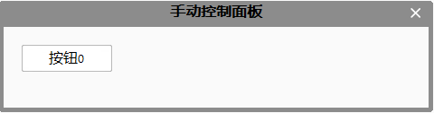
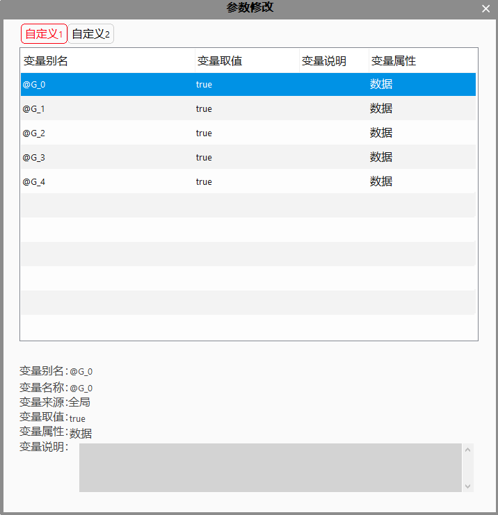
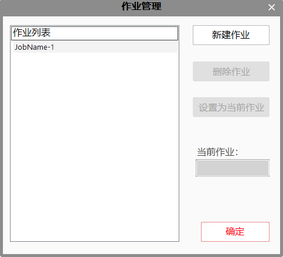
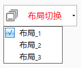

Thanh công cụ hiển thị: Hiển thị giao diện bật lên để chỉnh sửa tham số của công cụ và chỉnh sửa giao diện hiển thị (view).
Chỉnh sửa tham số: Nhấp chuột để chọn công cụ cần chỉnh sửa tham số, giao diện chỉnh sửa tham số sẽ bật lên. Hình dưới là ví dụ giao diện chỉnh sửa tham số của công cụ tìm đường thẳng.

Chỉnh sửa giao diện hiển thị (view): Có thể chỉnh sửa giao diện hiển thị trong view, bao gồm kiểu đường, độ rộng, phông chữ, cỡ chữ và màu sắc. Có thể xóa hoặc hoàn tác các đối tượng UI trong view, và có thể tùy chỉnh tọa độ văn bản liên kết cửa sổ.

Thêm tùy chọn:

Chuyển đổi kích thước toàn màn hình: Thay đổi kích thước giao diện sản xuất; chế độ toàn màn hình có thể hiển thị hoặc ẩn thanh tác vụ.
Ẩn vào khay hệ thống: Thu nhỏ giao diện và ẩn biểu tượng phần mềm vào khay hệ thống.

Thủ công: Bảng điều khiển thủ công được tùy chỉnh trong phần “Điều khiển - Nhiều điều khiển hơn”, như hình minh họa bên dưới.

Thoát: Thoát chương trình.
Tắt máy: Tắt máy tính.
Lưu: Lưu giải pháp sau khi chỉnh sửa.
Cài đặt tham số: Hiển thị dữ liệu nhóm, có thể chỉnh sửa giá trị dữ liệu nhóm và biệt danh (tên hiển thị) của biến. Chọn dữ liệu, nhấp vào vùng “Giá trị biến” để chỉnh sửa giá trị. Cách chỉnh sửa biệt danh biến tương tự cách chỉnh sửa giá trị. Phần dưới hộp thoại sẽ hiển thị thông tin liên quan đến tham số đó.

Quản lý công việc: Quản lý tên công việc trong phần phân tích thống kê.
Tên công việc thực chất là một nhãn định danh, dùng để xác định dữ liệu thuộc về công việc nào. Có thể tạo mới, xóa hoặc đặt làm công việc hiện tại. Sau khi đặt làm công việc hiện tại, mô-đun thống kê – giao diện sản xuất sẽ lọc dữ liệu dựa trên tên công việc này.
Lưu ý
Khi xóa một tên công việc, toàn bộ dữ liệu thuộc tên đó cũng sẽ bị xóa. Dữ liệu đã xóa sẽ được sao lưu tự động vào thư mục tương ứng LusterCache\DBfiles\thời_gian.csv, trong đó chứa tên công việc và dữ liệu liên quan đã bị xóa.

Chuyển đổi bố cục: Có thể chuyển đổi giữa các bố cục.
Dấu tick trước bố cục biểu thị bố cục hiện đang hiển thị; in đậm biểu thị bố cục chính.
Lưu ý
Nếu bật tính năng tự động chuyển bố cục, giao diện sản xuất trong trạng thái chạy sẽ tự động chuyển bố cục theo giá trị của các biến liên quan. Nếu phần mềm đang chạy, khi có xung đột giữa chuyển bố cục tự động và thủ công, sẽ lấy bố cục được chuyển lần cuối cùng làm chuẩn. Nếu xuất hiện hộp thoại cảnh báo, bố cục sẽ không được tự động chuyển cho đến khi hộp thoại được đóng hoặc vấn đề được xử lý.

Chạy: Chạy toàn bộ – thực thi tất cả các dự án.
Dừng: Dừng dự án.
Tạm dừng: Tạm dừng dự án; khi tất cả dự án ở trạng thái tạm dừng, có thể chỉnh sửa tham số.
Tiếp tục: Tiếp tục chạy dự án.
Giao diện kỹ sư: Thoát giao diện sản xuất và vào giao diện chỉnh sửa dự án chính.
Điều khiển: Bao gồm điều khiển chỉ đọc và không chỉ đọc. Điều khiển không chỉ đọc có thể thay đổi giá trị, qua đó sửa dữ liệu liên kết; điều khiển chỉ đọc chỉ hiển thị giá trị, không thể chỉnh sửa.
Phóng to tối đa một view: Nhấp đúp vào view cần phóng to; nếu muốn khôi phục, nhấp đúp lại view đó.
Thanh trạng thái: Hiển thị thông tin như số tài nguyên, số handle, CPU, bộ nhớ, tỷ lệ sử dụng đĩa, thời gian hệ thống, v.v.